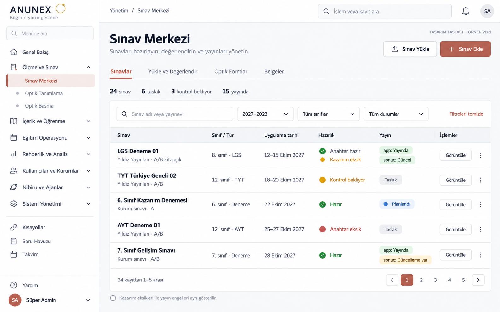
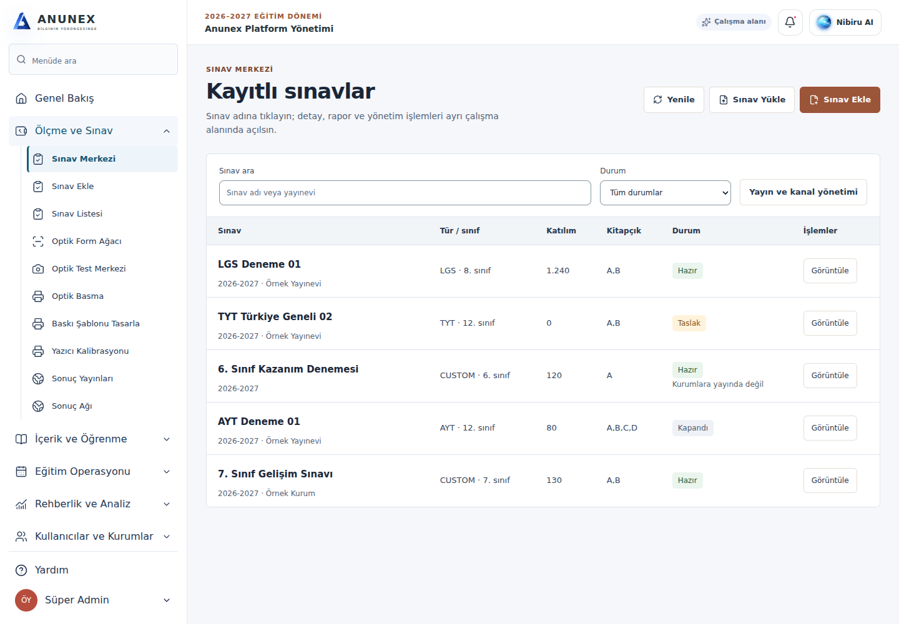

Uygulama görüntüsü sentetik veridir. Mevcut başlık/işlemler/kolonlar korunur. Referanstaki tarih, hazırlık ve sonuc güncellik verileri mevcut katalog yanıtında yok; uydurulmadı. Detaylar README.md dosyasında.

